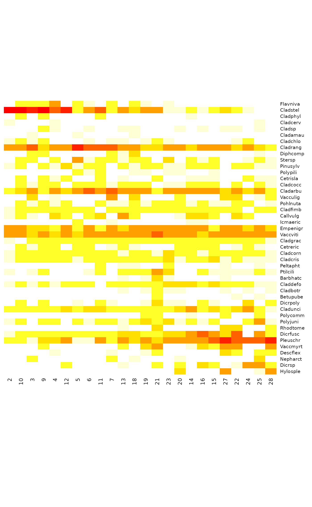
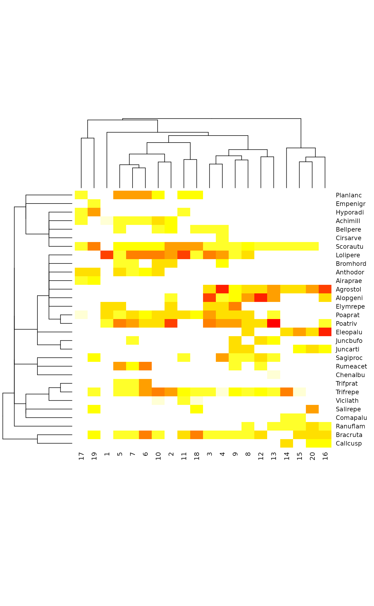
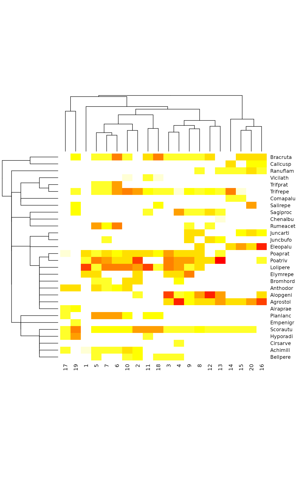
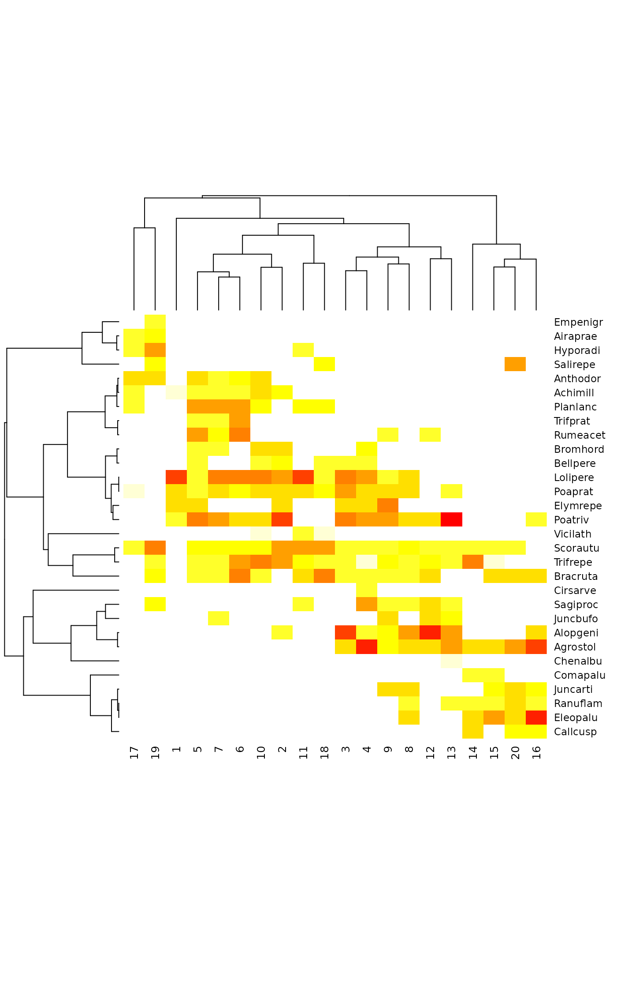

Display Compact Ordered Community Tables
vegemite.RdFunctions vegemite and tabasco display compact
community tables. Function vegemite prints text tables where
species are rows, and each site takes only one column without
spaces. Function tabasco provides interface for
heatmap for a colour image of the
data. The community table can be ordered by explicit indexing, by
environmental variables or results from an ordination or cluster
analysis.
Usage
vegemite(x, use, scale, sp.ind, site.ind, zero=".", select ,...)
tabasco(x, use, sp.ind = NULL, site.ind = NULL, select,
Rowv = TRUE, Colv = TRUE, labRow = NULL, labCol = NULL,
scale, col = heat.colors(12), ...)
coverscale(x, scale=c("Braun.Blanquet", "Domin", "Hult", "Hill", "fix","log"),
maxabund, character = TRUE)Arguments
- x
Community data.
- use
Either a vector, or an object from
cca,decoranaetc. orhclustor adendrogramfor ordering sites and species.- sp.ind, site.ind
Species and site indices. In
tabasco, these can also behclusttree,agnesclusterings ordendrograms.- zero
Character used for zeros.
- select
Select a subset of sites. This can be a logical vector (
TRUEfor selected sites), or a vector of indices of selected sites. The order of indices does not influence results, but you must specifyuseorsite.indto reorder sites.- Rowv, Colv
Re-order dendrograms for the rows (sites) or columns (species) of
x. If theRowv = TRUE, row dendrograms are ordered by the first axis of correspondence analysis, and whenColv = TRUEcolumn dendrograms by the weighted average (wascores) of the row order. Alternatively, the arguments can be vectors that are used to reorder the dendrogram.- labRow, labCol
character vectors with row and column labels used in the
heatmapinstead of the default. NB., the input matrix is transposed so that row labels will be used for data columns.- scale
In
vegemiteandcoverscale: cover scale used (can be abbreviated). Intabasco: scaling of colours inheatmap. The alternatives ofcoverscalecan be used intabasco, and in addition"column"or"row"scale columns or rows to equal maxima (NB., these refer to the transposed data of theheatmap), while"none"uses original values.- col
A vector of colours used for above-zero abundance values.
- maxabund
Maximum abundance used with
scale = "log". Data maximum in theselected subset will be used if this is missing.- character
Return character codes suitable for
vegemite. IfFALSE, returns corresponding integers.- ...
Arguments passed to
coverscale(i.e.,maxabund) invegemiteand toheatmapintabasco.
Details
The function vegemite prints a traditional community table.
The display is transposed, so that species are in rows and sites in
columns. The table is printed in compact form: only one character
can be used for abundance, and there are no spaces between
columns. Species with no occurrences are dropped from the table.
Function tabasco produces a similar table as vegemite
using heatmap, where abundances are coded by
colours. The function scales the abundances to equal intervals for
colour palette, but either rows or columns can be scaled to equal
maxima, or the coverscale class systems can be used. The
function can also display dendrograms for sites (columns) or species
if these are given as an argument (use for sites,
sp.ind for species).
The parameter use will be used to re-order output. The
use can be a vector or an object from hclust or
agnes, a dendrogram or any
ordination result recognized by scores (all ordination
methods in vegan and some of those not in vegan). The
hclust, agnes and
dendrogram must be for sites. The dendrogram is
displayed above the sites in tabasco, but is not shown in
vegemite. No dendrogram for species is displayed, except
when given in sp.ind.
If use is a vector, it is used for ordering sites. If
use is an object from ordination, both sites and species are
arranged by the first axis (provided that results are available both
also for species). When use is an object from
hclust, agnes or a
dendrogram, the sites are ordered similarly as in the
cluster dendrogram. Function tabasco re-orders the dendrogram
if Rowv = TRUE or Rowv is a vector. Such re-ordering is
not available for vegemite, but it can be done by hand using
reorder.dendrogram or reorder.hclust.
Please note that dendrogram and hclust
reordering can differ: unweighted means of merged branches are used in
dendrogram, but weighted means (= means of leaves of the
cluster) are used in reorder.hclust. In all cases where
species scores are missing, species are ordered by their weighted
averages (wascores) on site order.
Species and sites can be ordered explicitly giving their indices or
names in parameters sp.ind and site.ind. If these are
given, they take precedence over use. A subset of sites can
be displayed using argument select, but this cannot be used
to order sites, but you still must give use or
site.ind. However, tabasco makes two exceptions:
site.ind and select cannot be used when use is
a dendrogram (clustering result). In addition, the sp.ind can
be an hclust tree, agnes
clustering or a dendrogram, and in that case the
dendrogram is plotted on the left side of the
heatmap. Phylogenetic trees cannot be directly used,
but package ape has tools to transform these to
hclust trees.
If scale is given, vegemite calls coverscale to
transform percent cover scale or some other scales into traditional
class scales used in vegetation science (coverscale can be
called directly, too). Function tabasco can also use these
traditional class scales, but it treats the transformed values as
corresponding integers. Braun-Blanquet and Domin scales are
actually not strict cover scales, and the limits used for codes
r and + are arbitrary. Scale Hill may be
inappropriately named, since Mark O. Hill probably never intended
this as a cover scale. However, it is used as default “cut levels”
in his TWINSPAN, and surprisingly many users stick to this
default, and this is a de facto standard in publications.
All traditional scales assume that values are cover percentages with
maximum 100. However, non-traditional alternative log can be
used with any scale range. Its class limits are integer powers of
1/2 of the maximum (argument maxabund), with + used
for non-zero entries less than 1/512 of the maximum (log
stands alternatively for logarithmic or logical). Scale fix
is intended for “fixing” 10-point scales: it truncates scale values
to integers, and replaces 10 with X and positive values below
1 with +.
Value
The functions are used mainly to display a table, but they return
(invisibly) a list with items species for ordered species
index, sites for ordered site index, and table for the
final ordered community table.
These items can be used as arguments sp.ind and site.ind
to reproduce the table, or the table can be further edited. In
addition to the table, vegemite prints the numbers of species
and sites and the name of the used cover scale.
References
The cover scales are presented in many textbooks of vegetation science; I used:
Shimwell, D.W. (1971) The Description and Classification of Vegetation. Sidgwick & Jackson.
Note
The name vegemite was chosen because the output is so
compact, and the tabasco because it is just as compact, but
uses heat colours.
Examples
data(varespec)
## Print only more common species
freq <- apply(varespec > 0, 2, sum)
vegemite(varespec, scale="Hult", sp.ind = freq > 10)
#>
#> 1122212121122 1112
#> 854739268340575634292011
#> Callvulg 111...11.311...1111.111.
#> Empenigr 211332121112211111212213
#> Vaccviti 323332212113221211233234
#> Pinusylv 111.111111111.11.1111111
#> Dicrfusc 12.111441121211111111111
#> Dicrpoly .11.11.11..1.11....1.111
#> Pleuschr 144533435123411111111131
#> Polyjuni 111.11.111112111.111.111
#> Pohlnuta 111111111111.1..11.11111
#> Ptilcili 1111111111..1..11.11..12
#> Cladarbu 321122121332143423111121
#> Cladrang 321221131312145443313241
#> Cladstel 11111311.211.11254555542
#> Cladunci 112111111131111111111111
#> Cladcocc 11..11111111111111.1.11.
#> Cladcorn 111111111111111111111111
#> Cladgrac 111111111111111111111.11
#> Cladfimb 11.1111111111111111111.1
#> Cladcris 111111111111111111111111
#> Cladchlo ..1.111..1...1.11.11.1.1
#> Cetreric 111...11.111111111.1.1..
#> Cetrisla .11....1111.1....1.11111
#> Stersp 111.11.1111.112111...11.
#> Claddefo 1111111111111111111111.1
#> 24 sites, 24 species
#> scale: Hult
## Order by correspondence analysis, use Hill scaling and layout:
dca <- decorana(varespec)
vegemite(varespec, dca, "Hill", zero="-")
#>
#> 1 1 1 11122211122222
#> 203942561738913046572458
#> Flavniva -1114-11-1-11-1---------
#> Cladstel 5555551451425411111211--
#> Cladphyl -1-1----1-------1-------
#> Cladcerv 1---1-----------------1-
#> Cladsp ---11--1--11---1-1-11-1-
#> Cladamau --1---1----1------------
#> Cladchlo 1111---1-11-111-----11--
#> Cladrang 535254555555223414332321
#> Diphcomp --11-----112----------1-
#> Stersp -11-1-4111111-1-111--111
#> Pinusylv 11-111111-111111111-1111
#> Polypili ------111--11-11--1-----
#> Cetrisla -1-111--1-1--1--111--111
#> Cladcocc -1111-1111111-11111-1-11
#> Cladarbu 113142453555313343413231
#> Vacculig --1-1----3-1---1---12-11
#> Pohlnuta -11111--11111111111111-1
#> Cladfimb 11111111-111111111111-11
#> Callvulg 111-21-12-51---1221-21--
#> Icmaeric ------1--1------11------
#> Empenigr 342214131314344333143131
#> Vaccviti 342514244334455432444443
#> Cladgrac 1-1111111111111111111111
#> Cetreric -1111-11-111---1111-111-
#> Cladcorn 111111111111111111111111
#> Cladcris 111111111111111111111111
#> Peltapht --------1-11--1----1--1-
#> Ptilcili 1-11---11-11141--1111111
#> Barbhatc ----------1-121----1----
#> Claddefo 11111111-111111111111111
#> Cladbotr ----------1-1111---1-1-1
#> Betupube -------------1------1-1-
#> Dicrpoly -1-1--1-11--1211-11--1-1
#> Cladunci 111111122111111251212311
#> Polycomm ------------11--1--1--1-
#> Polyjuni 11-11-1111111121111--131
#> Rhodtome ----------1--2-----21--1
#> Dicrfusc 111111111121112145425-41
#> Pleuschr 111213114132524434555555
#> Vaccmyrt ---1------1-24--12133--4
#> Descflex ----1----1--11-----21-11
#> Nepharct --1------1-1---1------2-
#> Dicrsp -----1----1--1-1-11-1541
#> Hylosple ---------------1---3--13
#> 24 sites, 44 species
#> scale: Hill
## Show one class from cluster analysis, but retain the ordering above
clus <- hclust(vegdist(varespec))
cl <- cutree(clus, 3)
sel <- vegemite(varespec, use=dca, select = cl == 3, scale="Br")
#>
#> 1 12
#> 20921
#> Flavniva .++..
#> Cladstel 55542
#> Cladphyl .++..
#> Cladcerv r....
#> Cladsp ..+..
#> Cladchlo r++.+
#> Cladrang 22121
#> Diphcomp ..+..
#> Stersp .+...
#> Pinusylv r++1+
#> Cetrisla .++++
#> Cladcocc .++..
#> Cladarbu +1+1+
#> Pohlnuta .++++
#> Cladfimb r++++
#> Callvulg r+.+.
#> Empenigr 22122
#> Vaccviti 22223
#> Cladgrac r.+++
#> Cetreric .++..
#> Cladcorn r+++r
#> Cladcris r++++
#> Ptilcili r.+.2
#> Barbhatc ....1
#> Claddefo r++++
#> Cladbotr ....+
#> Betupube ....+
#> Dicrpoly .++.1
#> Cladunci +++1+
#> Polycomm ....+
#> Polyjuni r++.+
#> Rhodtome ....1
#> Dicrfusc r++++
#> Pleuschr ++121
#> Vaccmyrt ..+.2
#> Descflex ....+
#> Dicrsp ...++
#> 5 sites, 37 species
#> scale: Braun.Blanquet
## Re-create previous
vegemite(varespec, sp=sel$sp, site=sel$site, scale="Hult")
#>
#> 1 12
#> 20921
#> Flavniva .11..
#> Cladstel 55552
#> Cladphyl .11..
#> Cladcerv 1....
#> Cladsp ..1..
#> Cladchlo 111.1
#> Cladrang 32131
#> Diphcomp ..1..
#> Stersp .1...
#> Pinusylv 11111
#> Cetrisla .1111
#> Cladcocc .11..
#> Cladarbu 11111
#> Pohlnuta .1111
#> Cladfimb 11111
#> Callvulg 11.1.
#> Empenigr 22123
#> Vaccviti 22334
#> Cladgrac 1.111
#> Cetreric .11..
#> Cladcorn 11111
#> Cladcris 11111
#> Ptilcili 1.1.2
#> Barbhatc ....1
#> Claddefo 11111
#> Cladbotr ....1
#> Betupube ....1
#> Dicrpoly .11.1
#> Cladunci 11111
#> Polycomm ....1
#> Polyjuni 111.1
#> Rhodtome ....1
#> Dicrfusc 11111
#> Pleuschr 11111
#> Vaccmyrt ..1.3
#> Descflex ....1
#> Dicrsp ...11
#> 5 sites, 37 species
#> scale: Hult
## Re-order clusters by ordination
clus <- as.dendrogram(clus)
clus <- reorder(clus, scores(dca, choices=1, display="sites"), agglo.FUN = mean)
vegemite(varespec, clus, scale = "Hult")
#>
#> 1 111 1211221212222
#> 431567380922149306254578
#> Flavniva 21.111.111....11........
#> Cladamau .1.1...1................
#> Stersp 111211111....111.1.111.1
#> Polypili ..111..1......111..1....
#> Diphcomp .1...111.1...........1..
#> Cladphyl ..1.....11...1..........
#> Cladrang 344544332133111223121121
#> Cladcerv 1.........1..........1..
#> Cladstel 454121215555213111111.1.
#> Cladarbu 322344331111132222121111
#> Vacculig 11...2.1........1.1..111
#> Callvulg 111.1.311.11.1..11111...
#> Icmaeric ...1.1.......1...1......
#> Cladsp 1...1.11.1......111..11.
#> Cladcocc 1111111111...1111111.1.1
#> Pinusylv 1.111.1111111111111111.1
#> Cladchlo .1..111.111.1.11..1.1...
#> Cetrisla 1.1...1.11.111...1.111.1
#> Cladfimb 11.11111111111111111.111
#> Peltapht ..1...11.......1.....11.
#> Cetreric 11.1111111...1..111111..
#> Cladgrac 11111111.111111111111111
#> Pohlnuta 111..11111.1111111111.11
#> Ptilcili .11.1.11.11.2.11.1111111
#> Barbhatc ......1.....1.11......1.
#> Cladcorn 111111111111111111111111
#> Vaccviti 113122132323412331223232
#> Cladcris 111111111111111111111111
#> Empenigr 111111122122312322111231
#> Cladbotr ......1.....1.111...1.11
#> Betupube ............1.....1..1..
#> Cladunci 111111111111131111112111
#> Claddefo 11.111111111111111111111
#> Dicrpoly ..11.1..11..1.1111.11..1
#> Polycomm ............111......11.
#> Rhodtome ......1.....1.....1...11
#> Polyjuni 1.111111111.111111.112.1
#> Dicrfusc 11111111111112111442.211
#> Pleuschr 113111111111123333444455
#> Vaccmyrt ......1..1..311..111..13
#> Nepharct .1...1.1........1....1..
#> Dicrsp ......1....11...111133.1
#> Descflex 1....1......1.1...1..111
#> Hylosple ................1....122
#> 24 sites, 44 species
#> scale: Hult
## Abundance values have such a wide range that they must be rescaled
tabasco(varespec, dca, scale="Braun")

## Classification trees for species
data(dune, dune.taxon)
taxontree <- hclust(taxa2dist(dune.taxon))
plotree <- hclust(vegdist(dune), "average")
## Automatic reordering of clusters
tabasco(dune, plotree, sp.ind = taxontree)

## No reordering of taxonomy
tabasco(dune, plotree, sp.ind = taxontree, Colv = FALSE)

## Species cluster: most dissimilarity indices do a bad job when
## comparing rare and common species, but Raup-Crick makes sense
sptree <- hclust(vegdist(t(dune), "raup"), "average")
tabasco(dune, plotree, sptree)
